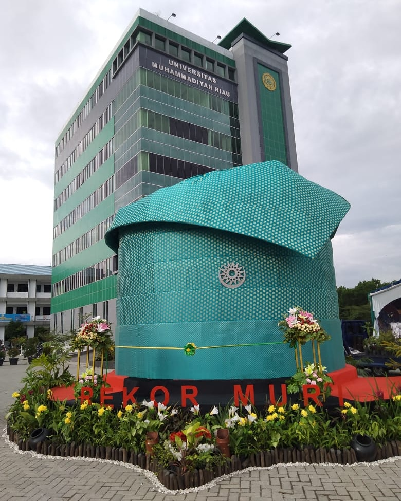

Hai, Saya Ferdie
Menurut saya tentang UMRI
Universitas Muhammadiyah Riau adalah sebuah perguruan tinggi swasta yang Terbaik di Riau. Selain itu juga tenaga pengajar di kampus ini sangat berkompeten dalam kegiatan mengajar dan memiliki kualitas yang sangat baik. Serta banyak jurusan yang bisa diambil oleh mahasiswa yang berkuliah disini, oleh karena itu UMRI menjadi salah satu tujuan jika kamu ingin berkuliah.
Kunjungi Website